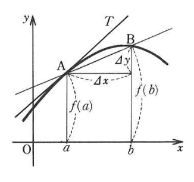

1 数学的準備
1.1 前説
この章では物理の世界に入る前に知っておかなければならないことを説明します．
物理学を始める際にして、初学者の方にはどうしてもある程度の数学の素養が求められます。物理学の発展と数学は決して離すことのできない物であり、例えばみなさんがこれかあら学ぶ力学の分野は、微分と積分の関係性を発見し、それを基礎にしてニュートンが発展させた分野です。
ですがそこが最大の関門として高校生の皆様には立ちはだかることになると思います．ベクトルも微分も積分も，なんなら三角関数もまともにやったことがないのに，いきなり全部を使いこなせることを要求されてしまうからです．
なので，この章では読者が高校2年生の途中くらいから読み始めているものだと想定して，数学について少しずつ勉強を進めながら，物理を始められるところまでやっていこうと思います．関数の定義や三角関数については流石にもう慣れてきたのではないかという時期ですね．もしもまだそこがあやふやであるのならば，まずは数学の教科書をある程度進ませてからこの本を読んでいただければ幸いと思っています．
また，初学者の方でもある程度は学びを進められるように配慮はしてありますが，もしもこの本の記述が難しい，ついていけないように感じられるのであれば，高等学校の教科書や市販の参考書などとともに読み進めていただくと良いかもしれません．
ですが，すでに一通り数学をやっている方ならば，この章を飛ばしていただいても構いません．そのための指標として，まずはこの章におけるゴールを一通り書いておきます．次の表に載せてあることを理解できるようになれば，ひとまずこの章は学び終えたという判定で考えてもらって構いません．
| 微分の定義 | \[\dv{x} f(x)=\lim_{\Delta x\rightarrow 0}\frac{f(x+\Delta x)-f(x)}{\Delta x}\] |
| 積の微分法 | \[\dv{x}\{f(x)g(x)\}=f'(x)g(x)+f(x)g'(x)\] |
| 商の微分法 | \[\dv{x}\{\frac{f(x)}{g(x)}\}=\frac{f'(x)g(x)-f(x)g'(x)}{\{g(x)\}^2}\] |
| 冪函数の微分法 | \[\dv{x}x^r=rx^{r-1}\] |
では，始めましょう．
1.2 極限
関数 \(f(x)=\frac{1}{x}\) を考えます．分母の値である \(x\) が \(1,10,100,...\) と大きくなるにつれて，関数の値は \(1,0.1,0.01,...\) と小さくなっていきますね．このような状態のことを次のように書く記すことにします．
\[x \to \infty \; \text{のとき，} \frac{1}{x} \to 0\]
または，
\[ \lim_{x\to\infty}\frac{1}{x}=0\]
この本では後者の方にまとめて書くことにします．
また同様にして，分母の値である \(x\) が \(-1,-10,-100,...\) と大きくなるにつれて，関数の値は \(-1,-0.1,-0.01,...\) と \(0\) に近づくことが確認されます．このような状態も次のように書く記すことにします．
\[ \lim_{x\to-\infty}\frac{1}{x}=0\]
次に，分母の値である \(x\) が \(1,0.1,0.01,...\) と正の値を保ちつつ小さくなる( \(0\) に近づく)につれて，関数の値は \(1,10,100,...\) と限りなく大きくなることが確認できます．このような状態も次のように書く記すことにします．
\[ \lim_{x\to +0}\frac{1}{x}=\infty\]
最後に分母の値である \(x\) が \(-1,-0.1,-0.01,...\) と負の値を保ちつつ小さくなるにつれて，関数の値は \(-1,-10,-100,...\) と限りなく小さくなることが確認できます．このような状態も次のように書く記すことにします．
\[ \lim_{x\to -0}\frac{1}{x}=-\infty\]
以上の話をまとめると次のようになります．
分数の分子が \(0\) でない定数の時，分母の絶対値が大きくなると分数の値は \(0\) に限りなく近づき，分母が \(0\) に近づくと分数の絶対値は限りなく大きくなる．
この定理の前半を証明するには \(\frac{c}{x}\) についてどんなに小さな正の数 \(h\) が指定されようとも， \(|\frac{c}{x}|<h\) となる \(x\) が存在することを示せば良いです．例えば \(|x|>\frac{|c|}{h}+1\) などが存在します．後半については，\(\frac{c}{x}\) についてどんなに大きな正の数 \(G\) が指定されようとも， \(|\frac{c}{x}| > G\) となる \(x\) が存在することを示せば良いです．例えば \(0<|x|<\frac{|c|}{G}\) を満たす \(x\) などが存在します．
1.3 収束
次に，大事な事項である収束について説明します．
まず，次のような関数を考えましょう．
\[f(x) = \frac{x^2-1}{x-1}\]
この関数は \(x=1\) では定義されません．なぜなら，分母が \(0\) になってしまうからです．では，この関数の \(x=1\) 周辺での様子はどうなっているのでしょうか．周辺なので， \(x\neq 1\) とすることができます．なので，その時に限り，
\[f(x) = \frac{x^2-1}{x-1}=\frac{(x+1)(x-1)}{x-1}=x+1\]
と式変形することができ， \(x+1\) の値は \(x\) が限りなく \(1\) に近づく際には， \(2\) に限りなく近づくことになります．この状態のことを次のように書き表します．
\[ \lim_{x\to 1}f(x)=2\]
このことをまとめ上げると次のようになります．
\(f(x)\) が \(x=a\) の近くで定義されている関数で， \(x\) が \(a\) に近づく時，\(f(x)\) が限りなく \(\alpha\) に近づく時，次のように書く．
\[ \lim_{x\to a}f(x)=\alpha\]
ただし， \(f(x)\) は \(x=a\) において定義されていなくとも良い．また， \(x\) が \(a\) より大きな値から \(a\) に近づくときは \(\lim_{x\to a+0}\) と書き，\(x\) が \(a\) より小さな値から \(a\) に近づくときは \(\lim_{x\to a-0}\) と書く．
以上の知識を持って，実際に問題を解いてみましょう．
| \[\lim_{x\to 1}\frac{x^2-x}{x^2+x-2}\] | \[\lim_{x\to 2}\frac{x-2}{\sqrt{x}-\sqrt{2}}\] |
| \[\lim_{x\to 1}\frac{2-\sqrt{a-x}}{1-x}=b\;\text{収束する}\] | \[\lim_{x\to -\infty}x(\sqrt{x^2-2x+3}+x-a)\;\text{収束する}\] |
| \[\frac{1}{3}\] | \[2\sqrt{2}\] |
| \[a=5,\;b=-\frac{1}{4}\] | \[a=1,\;b=-1\] |
\[f(x)=\frac{2ax^2-(a-2)x-1}{ax^2-(a^2-1)x-a}\] と定義された関数があり，次の式が成り立つように \(a\) の値を定めよ． \[\lim_{x \to 1}f(x)=\frac{1}{2}\]
\[f(x)=\frac{(2x-1)(ax+1)}{(x-a)(ax+1)}=\frac{2x-1}{x-a}\] となっているので，極限を計算すると \[\frac{1}{1-a}=\frac{1}{2}\] \[a=-1\]
とわかる．
1.4 商微分
ある関数 \(f(x)\) を考えてみることにしましょう．この関数の振る舞いを考える際には定義式自体の形を見て，対称性や式変形などを駆使することが多いと思われます．ここではその振る舞いを考える方法の一つを紹介してみたいと思います．

上の図のように， \(f(x)\) が \(x=a\) から \(x=b=a+\Delta x\) だけ変化して場合に， \(\Delta y\) だけの変化が起きるものとします．\(\Delta x,\; \Delta y\) は一つの変数であり，増分と呼ばれます．
その時次の式が成り立つかと思われます．
\[\Delta y = \frac{f(b)-f(a)}{b-a} \Delta x\]
この式を次のように変形することによって，この式の概要が見やすくなるでしょう．
\[ f(b) = f(a) + \frac{\Delta y}{\Delta x}(b-a) \]
この式が表すものとは， \(f(b)\) の値が \(f(a)\) の値から \(\frac{\Delta y}{\Delta x}(b-a)=\text{ABの傾き}\times a\text{と}b\text{の違いの分}\) だけずれているということになるわけです．
この時， \(\frac{\Delta y}{\Delta x}\) の値を \(\Delta x\to 0\) と極限をとって考えれば，ABの傾きは点Aにおける接線の傾きになるわけです．このとき，次のように書き記すことにします．
\[\lim_{\Delta x \to 0}\frac{\Delta y}{\Delta x}=\dv{y}{x}=y'=f'(x)\]
この値のことを微分係数と呼んでいます．先ほどの式を微分係数を使って書き直してあげれば次のようになるわけです．
\[ f(b) = f(a) + \frac{\Delta y}{\Delta x}(b-a) \]
\[ \Delta y = \dv{y}{x} \Delta x\]
ここで近似値にしたのは， \(\Delta x\) をしっかりと極限とっていないからですが，今までやってきたことが接線を使って近似をしているというのがわかりやすい形なので採用しました．
この式の言わんとするところは，十分小さな \(\Delta x\) に関して言えば \(\Delta y\) は接戦の傾きで近似できるということです．
以上のことを実際の具体的な関数でやってみましょう．例えば， \(f(x)=x^2\) などを考えれば
\[\Delta y = \frac{b^2-a^2}{b-a} \Delta x = (b+a) \Delta x = (2a+\Delta x) \Delta x\]
と式変形がなされるわけです．これによって \(\Delta y,\; \Delta x\) の比は次のように書き表され
\[\frac{\Delta y}{\Delta x} = 2a + \Delta x\]
となります．そして，極限を取ることによって
\[\dv{y}{x}=2a\]
となります．このことを \(f(x)\) の \(x=a\) における微分係数は \(2a\) であると呼び，次のように表すことが多いです．
\[ \dv{y}{x}|_{x=a}=f'(a)=2a\]
また， \(a\) という具体的に代入した値ではなく，任意の \(x\) についても同様なことが言えるため，
\[ \dv{y}{x}=f'(x)=2x\]
と書くことになります．この時， \(f(x)\) の導関数は \(f'(x)=2x\) などと呼びます．以上の議論を最初から \(\Delta x,\: \Delta y\) が微小分，つまり， \(\dd x,\: \dd y\) としてすることもでき，その場合は
\[\dd y = \frac{b^2-a^2}{b-a} \dd x = (b+a) \dd x = (2a+\dd x) \dd x = 2a \dd x + (\dd x)^2= 2a \dd x\]
\[\dv{y}{x} = 2a\]
ここで注目して欲しいのは， \(\dd y\) を表す式の中で， \(\dd x\) の一次以上の項が消えていることです．これは極限を取ると消えてしまうからですね．
以上述べたように，微分を考える理由とは，接線で曲線を近似してみようという試みであり，また，曲線を非常に小さな部分で見てあげれば直線になると考えていることになります．
実際に問題を解いてみましょう．
次の関数の導関数を求めよ． \[f(x)=x^3+x+1\]
\(a=x,\;b=a+\Delta x\) とする． \[\Delta y = \frac{f(b)-f(a)}{b-a}\Delta x\] \[\frac{f(b)-f(a)}{b-a}=\frac{f(a+\Delta x)-f(a)}{a+\Delta x -a} \] \[= \frac{3x^2\Delta x + 3x\Delta x^2 + \Delta x ^3 + \Delta x}{\Delta x}\] \[=3x^2+ 3x\Delta x + \Delta x ^2 + 1 \to_{\Delta x \to 0} 3x^2+1\] \[\dv{y}{x}=3x^2+1\]
ここで注目して欲しいのは， \(\Delta y\) を表す式の中で， \(\Delta x\) の2次以上の項が消えていることです．導関数を求める極限の計算では完全に消滅しますが， \(\Delta x\) が \(0\) に比較的に近いだけの値を考えている時の近似計算でも同様に無視したりします．このことを一次近似と呼んでいます．具体的な問題は後半にあるので，手を動かしてやってみましょう．
次に導関数に慣れてもらうために問題を置いておきます．
次の関数の導関数を求めよ．
| \[x^2\] | \[\sqrt{x}\] |
| \[(x+1)(x+2)\] | \[\frac{1}{x}\] |
| \[x\sqrt{x}\] | \[x^6+x^5+x^4\] |
| \[2x\] | \[\frac{\sqrt{x+\Delta x}-\sqrt{x}}{\sqrt{x}}=\frac{\Delta x}{\Delta x (\sqrt{x+\Delta x}+\sqrt{x})}\] \[\frac{1}{2\sqrt{x}}\] |
| \[2x+3\] | \[-\frac{1}{x^2}\] |
| \[\frac{3}{2}\sqrt{x}\] | \[6x^5+5x^4+4x^3\] |
次の極限値を \(f,f'\) を用いて表せ．
\[\lim_{x\to a}\frac{x^nf(x)-a^nf(a)}{x^n-a^n}\]
\[f(a)+\frac{a}{n}f'(a)\]
次の値を近似して解け．
\[1024^2,\; \sqrt{74}\]
\(f(x)=x^2\) とする． \[f(x+a) \approx f(x) + f'(x) \times a\] なので， \(x=1000,\; a=24\) を代入することによって \[1000^2 + 1000 \times 24 \approx 10024000\]
と近似できる．
後半の問題も同じく， \(f(x)=\sqrt{x},\; x=64,\; a=10\) とおいて解けば， \[\sqrt{64+10} \approx \sqrt{64} + \frac{1}{2\sqrt{64}} \times 10 \approx 8.6 \]
次の事実を証明せよ．
\[(f+g)'=f'+g'\]
\[ (fg)' = f'g+fg'\]
\[\dv{x}\frac{1}{g}=-\frac{g'(x)}{\{g(x)\}^2}\]
\[\left\{ \frac{f}{g} \right\} ' = \frac{f'g-fg'}{g^2}\]
\[\dv{x} x^n = nx^{n-1}\]
\((f+g)'=f'+g'\) は自力でせよ．
$ (fg)’ = f’g+fg’$ は厳密な証明ではなく，一次近似を駆使して説明する．厳密な証明は自ら調べよ．
\[f(x+\Delta x)g(x+\Delta x) \approx (f(x)+f'(x)\Delta x)(g(x)+g'(x)\Delta x)\]
ここで二次以上の変化量( \(\Delta\) 付きの値)は無視されるので， \[f(x+\Delta x)g(x+\Delta x) \approx f(x)g(x) + f'(x)g(x)\Delta x + f(x)g'(x)\Delta x\] \[\frac{f(x+\Delta x)g(x+\Delta x)-f(x)g(x)}{\Delta x} = f'(x)g(x)+f(x)g'(x)\]
後半の問題は有名問題であり，今までの知識を使って自力で解決せよ．
最後の問題については二項定理を用いて自ら解決せよ．なおこの定理は \(n\) が整数の時だけでなく，実数のときにも成り立つが，その証明は難しいのでここでは省略する．ただし，これからは使っていくので，知っておくこと．
ここで，このテキストの特徴として，詳しい解答を書いていないことが多々あることでしょう．これは，特定の問題までの内容を理解した人ならば違和感なく解ける問題や，有名すぎるあまりにわざわざ書くこともないだろうと思われる問題について当てはまることになります．ただし，ぜひともこの考え方を習得してもらいたいと思われる際には，詳しい解答を書くように心がけています．
また，この本では，読者が実際に手を動かして問題を解くことを前提にして書いており，問題と解答を読むだけではなかなか問題解決能力が身につかないのではないかと思われます．ご注意ください．
1.5 合成関数の微分法
次に次の問題を考えてみましょう．
次の事実を証明せよ．
\[y=x^2+x,\; z=y^3+1\] としたとき，次の値をそれぞれ求めよ． \[\dv{y}{x},\;\dv{z}{y},\;\dv{z}{x}\]
\[\dv{y}{x}=2x+1,\; \dv{z}{y}=3y^2\] これら二つは簡単でしょう．では， \(\dv{z}{x}\) はどうしたらいいでしょうか．分数と同様にするべきでしょうか．はい，その通りです．
\[\dv{z}{x}=3y^2(2x+1)=3(2x+1)(x^2+x)^2\]
\[\dv{y}{x}\cdot \dv{z}{y}=\dv{z}{x}\]
証明は
\[\lim_{\Delta x \to 0}\frac{\Delta z}{\Delta x}=\lim_{\Delta x \to 0}\frac{\Delta z}{\Delta y}\frac{\Delta y}{\Delta x}\]
によって大まかに達成されます．ただし， \(\Delta y \neq 0\) であることを前提にしている証明なので，厳密には証明になっていませんが，厳密な証明は難しいので省略させていただきます．
そして，この問題のおかげで私たちは次の問題を解決したことになるのです．
\(z=(x^2+x)^3+1\) の導関数を求めよ．
これを合成関数の微分法と呼ばれるもので，賢そうな人たちがチェーンルールと呼んでいるものです．
では，この定理を使って問題を解いていきましょう．
次の関数の導関数を求めよ． \[f(x)=\sqrt[3]{\frac{x^2}{1-x}}\]
\(y=f(x),\; u=\frac{x^2}{1-x}\) とする．この時 \(y=\sqrt[3]{u}\) となるため
\[\dv{y}{x}=\dv{y}{u}\dv{u}{x}=\frac{1}{3u^{2/3}}\frac{2x-x^2}{(1-x)^2}=\frac{1}{3}\left(\frac{1-x}{x^2}\right)^{2/3}\frac{2x-x^2}{(1-x)^2}\]
次の関数の導関数を求めよ．
| \[\sqrt{a^2-x^2}\] | \[x+\sqrt{x^2-1}\] |
| \[\frac{x}{\sqrt{x^2+1}}\] | \[\frac{\sqrt{a^2+x^2}-\sqrt{a^2-x^2}}{\sqrt{a^2+x^2}+\sqrt{a^2-x^2}}\] |
\(x=y\sqrt{y+1}\) の時， \(\dv{y}{x}\) を求めよ．
| \[-\frac{x}{\sqrt{a^2-x^2}}\] | \[1+\frac{x}{\sqrt{x^2-1}}\] |
| \[\frac{1}{(x^2+1)\sqrt{x^2+1}}\] | \[\frac{2a^2(a^2-\sqrt{a^4-x^4})}{x^3\sqrt{a^4-x^4}}\] |
次の問題については，
\[\dv{x}{y}=\frac{3y+2}{2\sqrt{y+1}}\] \[\dv{y}{x}=\frac{2\sqrt{y+1}}{3y+2}\]
これは逆関数の微分法と呼ばれるものだが，
\[\lim_{\Delta x \to 0}\frac{\Delta y}{\Delta x}=\lim_{\Delta x \to 0}\frac{1}{\frac{\Delta y}{\Delta x}}\]
を考えれば明らかである．ただしこの証明は連続性などの過程を飛ばした直感的なものに過ぎず，厳密な証明はここではしない．
1.6 増減
まず，定理から述べようと思います．
とある区間において，
- \(f'(x) \geq 0\) であれば，この区間では \(f(x)\) は増加する．
- \(f'(x) \leq 0\) であれば，この区間では \(f(x)\) は減少する．
この定理については，ある区間の内で接戦の傾きが常に正ならば，関数は増加し続ける，また逆も然りということを述べているわけです．この定理がどのように使われるかは，次の問題で話すことにしましょう．
次の関数のグラフの概形を描け． \[f(x)=x^3-3x+1\]
{kind=link}
1.7 面積と区分求積法
小学校以来，何となく扱ってきた「面積」というものについて，少し詳しく述べていきます．
まず，長方形の面積は「縦\(\times\)横」と決めましょう．このことについては特に異論はないと思います．この長方形の面積を手がかりに，いろいろな図形の面積，特にグラフと軸で囲われた部分の面積を考えていくことにしましょう．
\(xy\) 平面上で， \(y=f(x)\) のグラフと，直線\(x=a,x=b\)で囲まれる領域の面積\(S\)を考えます．ここでは \(f(x)\) は区間 \([a,b]\) で連続な関数であるとします．
区間 \([a,b]\) を \(n\) 分割し，区間 \(\left[a+\displaystyle\frac{k-1}{n}(b-a),a+\displaystyle\frac{k}{n}(b-a)\right]\) における \(f(x)\)の最大値を\(M_k\) ，最小値を \(m_k\) とします．このとき， \(\displaystyle\sum_{k=1}^{n}\displaystyle\frac{M_k}{n}\) は \(S\) より少し大きく， \(\displaystyle\sum_{k=1}^{n}\displaystyle\frac{m_k}{n}\) は \(S\) より少し小さくなります。
そして，この分割をどんどん細かくしたとき，すなわち\(n\to\infty\)のとき，\(\displaystyle\sum_{k=1}^{n}\displaystyle\frac{M_k}{n}\)および，\(\displaystyle\sum_{k=1}^{n}\displaystyle\frac{m_k}{n}\) は \(S\) に限りなく近づくと考えられます．
上では各区間における \(f(x)\) の最大値，最小値をとって考えましたが，実は区間 \(\left[a+\displaystyle\frac{k-1}{n}(b-a),a+\displaystyle\frac{k}{n}(b-a)\right]\) ごとに好きな代表点 \(x_k\) をとって， \(M_k,m_k\) の代わりに \(f(x_k)\) を考えても問題ありません．以上を踏まえて， \[\displaystyle\lim_{n\to\infty} \displaystyle\sum_{k=1}^{n}\displaystyle\frac{b-a}{n}f(x_k)\] を， \(y=f(x)\) のグラフと，直線\(x=a,x=b\)で囲まれる領域の面積 \(S\) であると定めることにします．この考え方は，は区分求積法と呼ばれています．
\(y=f(x)\) のグラフと，直線\(x=a,x=b\)で囲まれる領域の面積 \(S\)を \[\displaystyle\lim_{n\to\infty} \displaystyle\sum_{k=1}^{n}\displaystyle\frac{b-a}{n}f(x_k)\] で定め，これを \[\displaystyle\int_{a}^{b}f(x)dx\] とかく．
補足
ここで述べた面積（ついては積分）の定義は，正確なものではありませんが，少なくとも連続関数についてはこの定義で問題を生じないので，このまま進めることにします．
次の値を求めよ．ただし，代表点\(x_k\)は\(\displaystyle\frac{k}{n}\)とせよ．
\[\displaystyle\int_{0}^{1} x^2dx\]
\[\begin{align*} \displaystyle\int_{0}^{1} x^2dx &= \displaystyle\lim_{n\to\infty} \displaystyle\sum_{k=1}^{n}\displaystyle\frac{1}{n}\cdot \left(\displaystyle\frac{k}{n}\right)^2\\ &=\displaystyle\lim_{n\to\infty}\displaystyle\frac{1}{n^3}\displaystyle\sum_{k=1}^{n}k^2\\ &=\displaystyle\lim_{n\to\infty}\displaystyle\frac{1}{n^3}\cdot \displaystyle\frac{n(n+1)(2n+1)}{6}\\ &=\displaystyle\frac{1}{3} \end{align*}\]
1.8 微分積分学の基本定理
1.7でみたように，面積の値を定積分として定めました．ここで，\(x\)を変数とした \[\displaystyle\int_{a}^{x}f(t)dt\] は，\(x\)の関数だと考えることができます．これを\(f(x)\)の不定積分と呼びます．
よく言われるように，微分と積分というのは互いに逆演算になっています．しかし，先の積分の項を読んだ方は，定積分の定義のどこにも微分が登場していない，ということにお気づきだと思います．実は微分と積分はそれぞれ独立して成立した分野で，後になって実は互いに関わりあっているということが分かったのです．
さて，次の定理は微分積分学の基本定理と呼ばれており，微分と積分を繋ぐ重要な事実です．
\[\displaystyle\frac{d}{dx}\displaystyle\int_{a}^{x}f(t)dt=f(x)\]
これは，積分したものを微分すると元に戻る，ということを述べている定理です．この事実を使えば，わざわざ定義からいちいち積分をしなくても，「微分すると \(f(x)\) になる関数」（これを原始関数といいます）を見つけられれば \(f(x)\) の積分が求められる，ということになります．今後， \(f(x)\) の不定積分は \(\displaystyle\int_{}^{}f(x)dx\) とかくことにします．
次の不定積分を求めよ． \[\displaystyle\int_{}^{}x\ dx \]
微分の知識を思い出せば， \(\displaystyle\frac{1}{2}x^2\) の微分が \(x\) になることはすぐにわかる．しかし，同様に \(\displaystyle\frac{1}{2}x^2+1\) も，\(\displaystyle\frac{1}{2}x^2-99\) も， \(\displaystyle\frac{1}{2}x^2+\pi\) も， \(\displaystyle\frac{1}{2}x^2\) に定数を足したものはすべて微分すれば\(x\)になる．これらをまとめて， \(\displaystyle\frac{1}{2}x^2+C\)とかき，\(C\)を積分定数という．もとの例題に対する答えは， \[\displaystyle\int_{}^{}x\ dx =\displaystyle\frac{1}{2}x^2+C~\mbox{($C$は積分定数)}\] である．
上の例題のように，不定積分の結果には積分定数がつくことになります．都度但し書きを書くのは煩雑なので，積分の説明の間は「 \(C\) は積分定数」という説明は添えないことにします．
次の不定積分を求めよ．
| \[\displaystyle\int_{}^{}1\ dx\] | \[\displaystyle\int_{}^{}x^k\ dx\ \ \ ( k\neq -1 )\] |
| \[\displaystyle\int_{}^{}\displaystyle\frac{1}{x}\ dx\] | \[\displaystyle\int_{}^{} \sin x\ dx\] |
| \[\displaystyle\int_{}^{}\cos x\ dx\] | \[\displaystyle\int_{}^{} e^x\ dx\] |
| \[x+C\] | \[\displaystyle\frac{1}{k+1}x^{k+1}\] |
| \[\ln x+C\] | \[-\cos x+C\] |
| \[\sin x+C\] | \[e^x\] |
前の説で述べた定積分の値については，不定積分を用いて計算することができます．
\(F(x)\) を \(f(x)\) の不定積分とすると \[\displaystyle\int_{a}^{b}f(x)\ dx=F(b)-F(a)\] また，簡単のため \(F(b)-F(a)\) のことを \(\left[F(x)\right]_{a}^{b}\) とかく．
ここで，不定積分は積分定数がついていたことを思い出します．実は上の計算をするときは，積分定数の値について考慮する必要はなく，好きなもの(通常は0でしょう)を使って問題ありません．なぜなら，\(F(x)\) の代わりに \(F(x)+C\) を使って右辺の計算をすると，引き算で結局 \(C\) が消えてしまうからです．
次の定積分を求めよ． \[\displaystyle\int_{0}^{8}x\ dx \]
\[\displaystyle\int_{}^{}x\ dx = \left[\displaystyle\frac{1}{2}x^2\right]_{0}^{8}=32-0=0\]
次の定積分を求めよ．
| \[\displaystyle\int_{1}^{4}1\ dx\] | \[\displaystyle\int_{0}^{1}x^k\ dx\ \ \ ( k\neq -1 )\] |
| \[\displaystyle\int_{1}^{e^2}\displaystyle\frac{1}{x}\ dx\] | \[\displaystyle\int_{0}^{\pi} \sin x\ dx\] |
| \[\displaystyle\int_{-\frac{\pi}{3}}^{0}\cos x\ dx\] | \[\displaystyle\int_{-1}^{1} e^x\ dx\] |
| \[3\] | \[\displaystyle\frac{1}{k+1}\] |
| \[2\] | \[2\] |
| \[\displaystyle\frac{\sqrt{3}}{2}\] | \[e-\displaystyle\frac{1}{e}\] |
1.9 積分の種々の性質
この節では，不定積分や定積分の計算をする上で役に立つ色々な性質について説明し，それを使う練習をしていきます．
\(F(x)\) を \(f(x)\) の不定積分，\(G(x)\) を \(g(x)\) の不定積分とし，\(a,b\) は定数とする．このとき，
\[\displaystyle\int_{}^{}(af(x)+bg(x))\ dx=aF(x)+bG(x)+C\]
これを積分の線形性という．
\[\displaystyle\int_{}^{}(af(x)+bg(x))\ dx=a\displaystyle\int_{}^{}f(x)\ dx+b\displaystyle\int_{}^{}g(x)\ dx\]
ともかける．
次の定積分を求めよ． \[\displaystyle\int_{}^{}(2x+3x^2)\ dx \]
\[\begin{align*}\displaystyle\int_{}^{}(2x+3x^2)\ dx &=2\displaystyle\int_{}^{}x\ dx+3\displaystyle\int_{}^{}x^2\ dx\\ &=x^2+x^3+C \end{align*}\]
このとき，2つの不定積分の和では積分定数は \(C\) だけでよく，2つつける必要はありません．2つの不定積分から出てくる積分定数の和を改めて定数としておいてしまえばよいからです．
定積分についても，同様の公式が成り立ちます．
次の不定積分や定積分を求めよ．
| \[\displaystyle\int_{1}^{4}2+4x\ dx\] | \[\displaystyle\int_{0}^{\pi}(\sin x+\cos x)\ dx\] |
| \[36\] | \[2\] |
次に，少し複雑な積分を計算するテクニックである置換積分と部分積分について説明します。まずは置換積分です。
\(\displaystyle\int f(x)\ dx=F(x)\) とする。 \[\displaystyle\int f(g(x))g^{\prime}(x)\ dx=F(g(x))\]
が成り立つ。
この事実は，合成関数の微分の逆と捉えることができます。要するに，合成関数の微分と同じようにかたまりで捉えて積分しよう，ということです。
次の不定積分を求めよ． \[\displaystyle\int_{}^{}\sin^{9}x\cos x\ dx \]
\[\begin{align*} \displaystyle\int_{}^{}\sin^{9}x\cos x\ dx&= \displaystyle\int_{}^{}\sin^{9}x(\sin x)^{\prime}\ dx\\ &= \displaystyle\frac{1}{10}\sin^{10} x \end{align*}\]
続いて部分積分について説明します。部分積分は，積の微分法の公式から導かれる定理です。
\(\displaystyle\int f(x)\ dx=F(x)\) とする。 \[\displaystyle\int_{}^{} f(x)g(x)\ dx=F(x)g(x)-\displaystyle\int_{}^{} F(x)g^{\prime}(x)\ dx\]
が成り立つ。
被積分関数が積の形になっているとき，一部の因数だけを積分することで元の積分を求めるので，部分積分といいます。特に \(\ln x\) は微分すると \(\displaystyle\frac{1}{x}\) になるので，特にこれを含む積分では有効なことが多いです。
次の不定積分を求めよ． \[\displaystyle\int_{}^{}\ln x \ dx \]
\[\begin{align*} \displaystyle\int_{}^{}\ln x\ dx&= (x)^{\prime}\ln x\ dx\\ &=x\ln x-\displaystyle\int_{}^{} x\cdot \displaystyle\frac{1}{x}\ dx\\ &=x\ln x-x+C \end{align*}\]
上の例題の結果はよく使うので，覚えておくとよい。